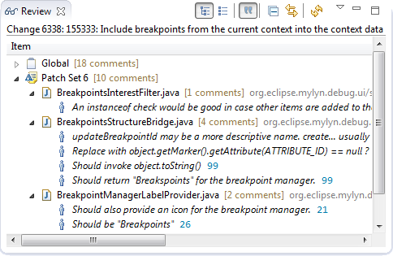

Local Files Shown in Review Compare View
When a file is opened from the review editor navigation and editing are available when a revision matches the local workspace.
Review Compare View
The order in which changes are shown has been reversed. The new contents is now shown on the right hand side to match the Gerrit web UI and the standard workflow in Eclipse.
Review Navigator
The Review navigator provides a view of all comments in a review.

Replies to Review Comments
The Review editor supports replying to global review comments.

Review Comment Spell Checking
New comments for reviews and submissions now get automatic spell checking.

Rebase for Gerrit Reviews
A rebase button is now available in the review editor when Gerrit 2.4 or later is used.

Auto Expand Sections
When clicking hyperlinks that point to a specific patch set such as https://git.eclipse.org/r/#/c/10057/4 the corresponding section
in the Review editor is automatically expanded. Also, the Reviewers section is now always expanded.
Gerrit My Changes Query
Completed reviews are now included in the My Changes query for Gerrit.
Gerrit 2.5
Gerrit 2.5 is supported. Support for Gerrit 2.6 is still work in progress (see bug 395059).